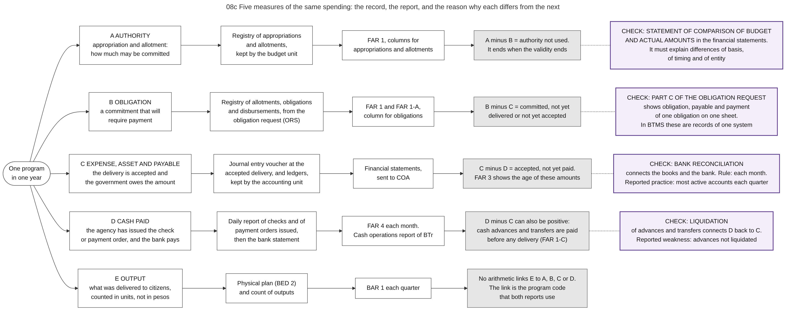

Diagram 08c · Mermaid flowchart
Five measures of the same spending: the record, the report, and the reason why each differs from the next
Question: For one program in one year, the budget report, the financial statements, the bank and the performance report show different amounts. Which amount measures what, and why do correct records differ?

What the diagram shows
- Question: for one program in one year, the budget report, the financial statements, the bank and the performance report show different amounts. Which amount measures what, and why do correct records differ?
- Idea: one purchase passes five moments on different dates: authority is given, a commitment is made, a delivery is accepted, cash is paid, and a result is counted. Each moment has its own record and its own report. The totals of a year differ because the moments occur in different periods. The difference is not an error. It is information: it shows what is committed but not delivered, delivered but not paid, or paid but not used.
- How to read it: each row is one measure, in the order of time. Column 2 = the record in which the event is first written. Column 3 = the report that adds the records. Column 4 (grey) = what explains the difference between this measure and the measure in the next row. Column 5 (violet) = a check that connects two measures.
- When the comparison works: two amounts may be compared when they have the same measure, the same period and the same coverage of funds. Example: obligations in FAR 1 of two agencies for the same year.
- When it fails: an obligation rate of 95 percent does not show that 95 percent of the goods were delivered or paid. Row B measures commitments, not deliveries or payments.
- Sources: registries and the reports FAR 1, FAR 1-A, FAR 1-C, FAR 3, FAR 4 and BAR 1 [JC2019-1]. Which record is written at which event, and the journal entry at the accepted delivery [GAM-V1 Annex H, Ch.3 ss.8-17]. Part C of the obligation request shows obligation, payable and payment of one obligation [GAM-V2 App.11]. The statement of comparison of budget and actual amounts, and the three kinds of difference that it must explain [GAM-V1 Ch.3 ss.25-30]. Bank reconciliation each month [GAM-V1 Ch.21 s.4]. Financial statements and their submission [PD1445 s.41][COA-GAS]. Physical plan (BED 2), cash operations report of BTr, lapse of the NCA, transfers not disbursed until used [NBC599]. The financial result in the bonus rules is cash disbursements measured against the NCA received [PBB2024]. Bank reconciliation: "most active government accounts are reconciled quarterly" (indicator 27.1, score C); unliquidated advances (indicator 27.3, score C) [PEFA2025]. In BTMS the registries, the books and the reports come from one set of records [CL2025-8].
- A difference between rule and reported practice: the Manual requires a bank reconciliation statement each month [GAM-V1 Ch.21 s.4]. The assessment of 2025 reports that most active accounts are reconciled each quarter [PEFA2025].
Code

---
title: "08c Five measures of the same spending: the record, the report, and the reason why each differs from the next"
config:
flowchart:
wrappingWidth: 900
---
flowchart LR
%% QUESTION THIS DIAGRAM ANSWERS: for one program in one year, the budget report, the financial statements, the bank and the performance report show different amounts. Which amount measures what, and why do correct records differ?
%% IDEA: one purchase passes five moments on different dates: authority is given, a commitment is made, a delivery is accepted, cash is paid, and a result is counted. Each moment has its own record and its own report. The totals of a year differ because the moments occur in different periods. The difference is not an error. It is information: it shows what is committed but not delivered, delivered but not paid, or paid but not used.
%% READING: each row is one measure, in the order of time. Column 2 = the record in which the event is first written. Column 3 = the report that adds the records. Column 4 (grey) = what explains the difference between this measure and the measure in the next row. Column 5 (violet) = a check that connects two measures.
%% WHEN THE COMPARISON WORKS: two amounts may be compared when they have the same measure, the same period and the same coverage of funds. Example: obligations in FAR 1 of two agencies for the same year.
%% WHEN IT FAILS: an obligation rate of 95 percent does not show that 95 percent of the goods were delivered or paid. Row B measures commitments, not deliveries or payments.
%% SOURCES: registries and the reports FAR 1, FAR 1-A, FAR 1-C, FAR 3, FAR 4 and BAR 1 [JC2019-1]. Which record is written at which event, and the journal entry at the accepted delivery [GAM-V1 Annex H, Ch.3 ss.8-17]. Part C of the obligation request shows obligation, payable and payment of one obligation [GAM-V2 App.11]. The statement of comparison of budget and actual amounts, and the three kinds of difference that it must explain [GAM-V1 Ch.3 ss.25-30]. Bank reconciliation each month [GAM-V1 Ch.21 s.4]. Financial statements and their submission [PD1445 s.41][COA-GAS]. Physical plan (BED 2), cash operations report of BTr, lapse of the NCA, transfers not disbursed until used [NBC599]. The financial result in the bonus rules is cash disbursements measured against the NCA received [PBB2024]. Bank reconciliation: "most active government accounts are reconciled quarterly" (indicator 27.1, score C); unliquidated advances (indicator 27.3, score C) [PEFA2025]. In BTMS the registries, the books and the reports come from one set of records [CL2025-8].
%% A DIFFERENCE BETWEEN RULE AND REPORTED PRACTICE: the Manual requires a bank reconciliation statement each month [GAM-V1 Ch.21 s.4]. The assessment of 2025 reports that most active accounts are reconciled each quarter [PEFA2025].
S(["One program<br/>in one year"])
S --> A1["A AUTHORITY<br/>appropriation and allotment:<br/>how much may be committed"] --> A2["Registry of appropriations<br/>and allotments,<br/>kept by the budget unit"] --> A3["FAR 1, columns for<br/>appropriations and allotments"] --> A4["A minus B = authority not used.<br/>It ends when the validity ends"]:::why
S --> B1["B OBLIGATION<br/>a commitment that will<br/>require payment"] --> B2["Registry of allotments, obligations<br/>and disbursements, from the<br/>obligation request (ORS)"] --> B3["FAR 1 and FAR 1-A,<br/>column for obligations"] --> B4["B minus C = committed, not yet<br/>delivered or not yet accepted"]:::why
S --> C1["C EXPENSE, ASSET AND PAYABLE<br/>the delivery is accepted and<br/>the government owes the amount"] --> C2["Journal entry voucher at the<br/>accepted delivery, and ledgers,<br/>kept by the accounting unit"] --> C3["Financial statements,<br/>sent to COA"] --> C4["C minus D = accepted, not yet paid.<br/>FAR 3 shows the age of these amounts"]:::why
S --> D1["D CASH PAID<br/>the agency has issued the check<br/>or payment order, and the bank pays"] --> D2["Daily report of checks and of<br/>payment orders issued,<br/>then the bank statement"] --> D3["FAR 4 each month.<br/>Cash operations report of BTr"] --> D4["D minus C can also be positive:<br/>cash advances and transfers are paid<br/>before any delivery (FAR 1-C)"]:::why
S --> E1["E OUTPUT<br/>what was delivered to citizens,<br/>counted in units, not in pesos"] --> E2["Physical plan (BED 2)<br/>and count of outputs"] --> E3["BAR 1 each quarter"] --> E4["No arithmetic links E to A, B, C or D.<br/>The link is the program code<br/>that both reports use"]:::why
A4 -.- K0["CHECK: STATEMENT OF COMPARISON OF BUDGET<br/>AND ACTUAL AMOUNTS in the financial statements.<br/>It must explain differences of basis,<br/>of timing and of entity"]:::rule
B4 -.- K1["CHECK: PART C OF THE OBLIGATION REQUEST<br/>shows obligation, payable and payment<br/>of one obligation on one sheet.<br/>In BTMS these are records of one system"]:::rule
C4 -.- K2["CHECK: BANK RECONCILIATION<br/>connects the books and the bank. Rule: each month.<br/>Reported practice: most active accounts each quarter"]:::rule
D4 -.- K3["CHECK: LIQUIDATION<br/>of advances and transfers connects D back to C.<br/>Reported weakness: advances not liquidated"]:::rule
classDef default fill:#ffffff,stroke:#444444,color:#111
classDef why fill:#e6e6e6,stroke:#555555,color:#111
classDef rule fill:#f3eefa,stroke:#5b3a8c,color:#111,stroke-width:2px